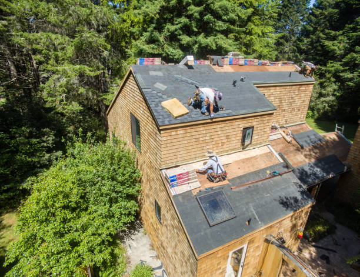

Fairfield Iowa
info@brimskylightrepairs.xyz
Fairfield Iowa
info@brimskylightrepairs.xyz

Expert skylight repairs in Fairfield Iowa . Fix leaks, enhance natural light, and improve energy efficiency. Trust our skilled team for quality, lasting results. Contact us for a free quote today!
Click Here To Call Us (877) 848-1711Skylights are a fantastic way to bring natural light into your home, but they can sometimes need repairs to maintain their functionality and beauty. At our skylight repair company in Fairfield Iowa we specialize in providing comprehensive solutions to all skylight issues. Whether you're dealing with leaks, cracks, or condensation buildup, our team has the expertise to handle it all. We use high-quality materials to ensure long-lasting results, so you won’t have to worry about recurring problems.
Timely skylight repairs not only enhance the aesthetics of your home but also improve energy efficiency by preventing heat loss and drafts. Our services in Fairfield Iowa are tailored to meet your specific needs, ensuring that every repair is done to the highest standards. We thoroughly inspect the skylight to identify underlying issues, offering solutions that are both effective and affordable.
Customer satisfaction is our top priority. That’s why we offer fast response times, transparent pricing, and a dedicated team ready to restore your skylight's brilliance. When you choose us for your skylight repair needs in Fairfield Iowa you’re choosing quality workmanship and peace of mind. Contact us today for a free consultation and let us bring back the natural light into your home!
Residential & commercial Skylight repairs
Quality services at affordable prices
Immediate 24/ 7 emergency services


If you’re wondering, “How do I know if my skylight is leaking?” it’s crucial to address potential issues early to prevent costly damage. At Brim Skylight Repairs, we provide expert solutions for skylight concerns across all cities in Fairfield Iowa .
A common sign of a skylight leak is the appearance of water stains or discoloration on your ceiling or walls. These stains often indicate that water is penetrating through the skylight and causing damage. You might also notice dampness or mold growth around the skylight area, which is a clear indicator of moisture intrusion.
Another telltale sign is visible damage to the skylight frame or flashing. If you observe cracks, gaps, or deterioration in the skylight’s components, it’s a red flag that a leak may be imminent or already present. Additionally, if your skylight is foggy or has condensation between the panes, it suggests that the seals have failed and moisture is getting in.
Regular maintenance and timely inspections are essential to catching these issues before they escalate. If you notice any of these signs, it’s important to contact a professional. At Brim Skylight Repairs, we offer thorough inspections and reliable repairs to ensure your skylight remains in top condition, protecting your home from leaks and water damage.
For expert skylight repair services in Fairfield Iowa trust Brim Skylight Repairs to provide fast, effective solutions to keep your home dry and secure.
Residential & commercial Skylight repairs
Quality services at affordable prices
Immediate 24/ 7 emergency services
Choosing local skylight contractors comes with many benefits, including personalized service and expertise in local roofing conditions. At Skylight repairs, we are proud to be the premier local skylight contractors in Fairfield Iowa . Our team is familiar with the regional climate and building regulations, which allows us to deliver tailored solutions to meet your specific needs. From repairs to installations, we are committed to providing quality service that stands out in the local market.

Regular repair and maintenance of your skylights can prolong their lifespan and improve efficiency. At Skylight repairs, we offer comprehensive skylight repair and maintenance services . Our routine check-ups and maintenance treatments are designed to identify potential issues early and provide necessary repairs before they escalate. Our maintenance services include cleaning, sealing, and minor repairs, ensuring your skylights remain in top condition year-round. Choose us to protect your investment and enhance the functionality of your property.

If your skylight glass has seen better days, it’s time for a replacement. At Skylight repairs, we provide skylight glass replacement services in Fairfield Iowa that restore your skylights to their optimal performance. Our experienced technicians handle the entire process efficiently, from removing old or damaged glass to installing new, high-quality skylight glass that enhances durability and insulation. We understand that skylight glass should be not only functional but beautiful, and we will help choose the perfect replacement to match your style and needs.

If you have motorized skylights, ensuring they function properly is essential for enjoying the convenience they offer. At Skylight repairs, we specialize in skylight motor repair services . Our skilled technicians can diagnose issues with skylight motors and provide effective repair solutions to restore their functionality. Whether it’s a malfunctioning remote or problems with the motor itself, you can count on our expertise to get your motorized skylights back in working order, allowing you to control the light in your space effortlessly.

Homeowners deserve the best when it comes to skylight repair. At Skylight repairs, we offer specialized skylight repair services for homes throughout Fairfield Iowa . Our knowledgeable team understands the specific challenges that residential skylights face and is equipped to handle everything from leaks to structural issues. We focus on providing fast, effective results so that you can enjoy the natural light and beauty your skylights provide with no interruptions. Choose us for personalized service, expert repairs, and a commitment to your satisfaction!
A business’s interior can vastly benefit from natural light, especially when skylights are properly maintained. At Skylight repairs, we offer skylight repair for businesses designed to minimize disruptions while ensuring you can continue your operations smoothly. Our experienced technicians work efficiently to handle repairs, keeping your skylights in ideal condition to inspire creativity and productivity in your workplace. Choose us for reliable service and expert repairs that will elevate your commercial space.

Choosing professionals for your skylight repair needs is crucial to ensure quality and reliability. At Skylight repairs, our skylight repair professionals are industry leaders with extensive training and experience. We are equipped with the latest technologies and tools to diagnose and address any skylight-related problems effectively. Our commitment to continuous education means we stay ahead of trends and techniques in the industry, guaranteeing that you receive the best service available. Choose our team for your skylight needs for unparalleled expertise and craftsmanship.

Maintaining your skylight doesn’t have to be an expensive endeavor. At Skylight repairs, we offer affordable skylight maintenance services in Fairfield Iowa . Our maintenance packages are designed to fit every budget while ensuring high-quality service. Regular maintenance can help extend the life of your skylight, prevent costly repairs, and improve energy efficiency. Count on us to keep your skylights in pristine condition without breaking the bank.
Years Experience
Expert Technicians
Satisfied Clients
Compleate Projects
At Brim Skylight Repairs, we stand out as the premier choice for skylight repair services across Fairfield Iowa . Our dedication to excellence and customer satisfaction makes us the top pick for homeowners and businesses alike. Here’s why we’re the best in the business:
Expert Craftsmanship: Our team of highly skilled technicians brings years of experience to every skylight repair job. We understand the intricacies of skylight systems and are adept at diagnosing and fixing issues efficiently. Whether you’re dealing with leaks, broken seals, or damaged frames, our expertise ensures a reliable solution.
Quality Materials: We use only the highest-quality materials for repairs, guaranteeing long-lasting results and superior performance. Our commitment to quality means that your skylight will not only be repaired but also fortified against future issues.
Prompt and Reliable Service: We value your time and understand that skylight issues can be urgent. That’s why we offer swift and dependable service, ensuring that your skylight is repaired promptly and with minimal disruption to your daily life.
Competitive Pricing: At Brim Skylight Repairs, we believe in offering exceptional service at fair prices. We provide transparent quotes with no hidden fees, so you know exactly what to expect.
Customer Satisfaction: Our reputation in Fairfield Iowa is built on a foundation of satisfied customers. We take pride in our work and strive to exceed your expectations with every repair.
Choose Brim Skylight Repairs for unmatched expertise, quality, and service in Fairfield Iowa . Contact us today for a consultation and experience the difference!
When searching for skylight repair near me, you want a reliable service that will address your needs promptly and professionally. At Skylight repairs, we specialize in skylight repairs that enhance the safety and beauty of your home or business. Our team of experienced technicians is located right here in Fairfield Iowa ready to tackle any issues you may have with your skylights. Whether it’s a simple leak or extensive damage, we are equipped with the knowledge and tools necessary to provide effective solutions. Our commitment to quality workmanship ensures that your skylights will be restored to their former glory, bringing natural light into your space while maintaining energy efficiency.
Throughout the years, we’ve built a reputation for reliability, affordability, and exceptional customer service. Our transparent consultation process and competitive pricing set us apart from the competition. Plus, we pride ourselves on using industry-leading materials that ensure durability and longevity. If you need skylight repair services, look no further than Skylight repairs .
At Skylight repairs, we understand the importance of affordability in home and business maintenance. That’s why we offer affordable skylight repair services without compromising on quality. Skylight issues can occur unexpectedly, and repairs can sometimes be costly. However, our skilled team is dedicated to providing solutions that meet your budget needs while delivering professional service.
We use innovative techniques and materials that minimize costs and maximize effectiveness, ensuring your skylight repairs last. Our commitment to affordability means you won’t have to sacrifice quality for price. Additionally, our regular maintenance plans can help you prevent unexpected repairs in the future, saving you money in the long run. Trust us to provide the best quality at competitive rates .
When it comes to skylight repair, you want the best service available. That’s where we come in! At Skylight repairs, we pride ourselves on providing the best skylight repair services . Our expert team utilizes the latest techniques and high-quality materials to ensure that every repair is performed to the highest standard. We focus on customer satisfaction and strive to exceed your expectations. Our skilled technicians are fully licensed and insured, giving you peace of mind knowing that your skylight is in good hands. Choose us for unmatched expertise and reliable service.
Natural light can transform your home, making it feel more open and inviting. However, damaged skylights can turn that dream into a nightmare, leading to leaks and energy inefficiency. At Skylight repairs, we specialize in residential skylight repair services . Whether you have a small leak or a shattered glass panel, our experienced professionals can quickly assess and resolve the issue, ensuring your home remains beautiful and functional. Our commitment to quality means you can trust us to use top-grade materials and techniques, ensuring a lasting repair for your residence.
Businesses thrive on a professional appearance, and maintaining your property's skylights is essential in achieving this. At Skylight repairs, we offer exceptional commercial skylight repair services . From office buildings to retail stores, we understand the importance of a well-maintained skylight that enhances the workspace and attracts customers. Our team works efficiently to minimize disruption to your business. With a focus on quality and customer satisfaction, we are dedicated to providing solutions that improve your building’s aesthetic appeal and energy efficiency.
When it comes to skylight repairs, choosing local contractors provides numerous advantages, from faster response times to a firm understanding of local regulations and building codes. At Skylight repairs, our local skylight repair contractors are not just skilled in their trade, but they also take pride in serving our community.
Our team is familiar with the common skylight issues specific to the area, enabling us to diagnose and repair problems efficiently. We prioritize building lasting relationships with our clients through transparency and communication. Our local presence means you can count on us for speedy service and immediate support whenever issues arise. Choose Skylight repairs for your local skylight repair needs, and experience the difference that commitment to community can make.
Leaks in skylights can lead to severe damage and costly repairs, making prompt attention essential. Our skylight leak repair services are designed to effectively address leaks at their source. At Skylight repairs, we specialize in diagnosing and repairing skylight leaks, no matter how complicated the issue may be.
Our expert technicians apply state-of-the-art leak detection methods and techniques to ensure we find and fix the problem quickly. After repair, we conduct comprehensive inspections to ensure the integrity of your skylights is restored. With our commitment to quality and thoroughness, we guarantee your satisfaction. Don't let a skylight leak disrupt your peace of mind; trust Skylight repairs for reliable repairs .
Skylight emergencies can strike unexpectedly, whether due to storm damage or sudden glass shattering. Knowing you have a reliable partner for emergency skylight repair can bring peace of mind. At Skylight repairs, we offer 24/7 emergency repair services. Our skilled team is always ready to respond quickly and effectively to mitigate any potential damage. With our commitment to swift service and reliable repairs, you can rest assured that your skylight emergency will be handled with urgency and expertise.
Damaged or cracked skylight glass can diminish the aesthetics of your home or business and allow moisture to penetrate. At Skylight repairs, we specialize in skylight glass repair in Fairfield Iowa providing thorough evaluations to ensure a comprehensive approach to your repair needs. Whether it’s a simple crack or more extensive damage, our skilled technicians will provide prompt, professional service using high-quality glass products designed for durability. With our commitment to quality, we ensure your skylight glass repair will enhance both beauty and functionality.
Skylights are often an integral part of a roof, and when they are damaged, it can impact the entire structure. Our skylight roof repair services in Fairfield Iowa address issues related not only to the skylight itself but to the roofing system surrounding it. We know how to effectively repair or replace damaged flashing, seals, and other components to restore your roof’s integrity. With Skylight repairs, you can trust our experienced team to provide comprehensive solutions that include inspection, repair, and preventive measures for both the skylight and the surrounding roof area.
Searching for reliable, professional skylight repair? Look no further than Skylight repairs. Our team of certified professionals in Fairfield Iowa specializes in the meticulous repair of various skylight types. We pride ourselves on our attention to detail and adhere to strict industry standards to ensure your skylight repair is performed correctly the first time. By choosing us, you are guaranteed a service that not only addresses your immediate repairs but also provides advice on maintaining your skylight so that it remains in perfect condition for years to come.
Skylight domes offer an elegant way to bring natural light into your space, but damages can arise due to various environmental factors. At Skylight repairs, we specialize in skylight dome repair services in Fairfield Iowa ensuring your installations are functional and visually appealing.
Our team of technicians meticulously assess the damage to your dome and provide efficient solutions to restore its integrity. We use high-quality materials and proven techniques to ensure long-lasting results. Whether your skylight dome has aesthetic imperfections or functional issues, we have the expertise to resolve them effectively. Count on us for reliable skylight dome repairs that enhance your property’s overall look and feel.
Skylight windows are a beautiful addition to any home or business, but when they require repairs, you need a reliable service provider. At Skylight repairs, we offer comprehensive skylight window repair services . Our experienced technicians are equipped to handle any issue, from leaks to mechanical failures. We prioritize customer satisfaction, ensuring that every repair is done efficiently and effectively. Let us help you maintain the beauty and functionality of your skylight windows.
Understanding the cost associated with skylight repairs can facilitate informed decision-making. At Skylight repairs, we provide free skylight repair cost estimates in Fairfield Iowa . Our approach involves a comprehensive assessment of your existing skylight situation, allowing us to offer transparent pricing that reflects the scope of work needed. We recognize the importance of budget-friendly solutions without compromising quality, and our detailed estimates ensure you’re fully aware of the costs involved. Choose us for clear communication and fair pricing tailored to meet your repair needs.
Whether you are looking to install new skylights or require repairs on existing ones, Skylight repairs provides comprehensive skylight installation and repair services . Our experienced team is knowledgeable in a variety of skylight types and styles, ensuring that your project is handled with precision and care. We assess your needs and preferences to deliver installations or repairs that elevate your property’s appeal and functionality. Trust us with your skylight project to benefit from dedicated service, quality craftsmanship, and efficient turnaround times.
Your skylights are unique, just like your property. At Skylight repairs, we offer custom skylight repairs tailored to suit your specific needs. Whether it involves a rare design, atypical dimensions, or unique materials, our skilled team has the expertise to deliver effective and stylish solutions. We take the time to understand your requirements, collaborating with you to create a repair plan that fits both aesthetic desires and practical needs. Experience our commitment to personalization and quality with custom skylight repairs that you can rely on.
Flashing plays a crucial role in protecting your skylight from water damage. If you’re experiencing leaks or water pooling around your skylight, it may be due to faulty flashing. At Skylight repairs, we specialize in skylight flashing repair ensuring that your skylight remains watertight and secure.
Our skilled technicians assess the condition of your flashing and perform necessary repairs or replacements using high-quality materials. We understand the importance of proper installation, and we ensure every repair meets industry standards for effectiveness. Choose us for reliable and durable skylight flashing repairs that safeguard your property from water intrusion.
When it comes to maintaining the clarity and functionality of your skylight, regular cleaning is essential. At Brim Skylight Repairs, we understand that keeping your skylight pristine is crucial for maximizing natural light and enhancing your home's energy efficiency. Here’s the best way to clean your skylight across all cities in Fairfield Iowa .
To start, ensure your skylight is cool and dry before cleaning. This prevents streaking and makes the process more effective. Use a soft, non-abrasive cloth or sponge with a mixture of mild dish soap and water. Avoid harsh chemicals or abrasive cleaners that can damage the glass or its seals. Gently wipe the surface to remove dirt and grime, taking care not to press too hard, which could cause scratches.
For hard-to-reach skylights or those with persistent stains, consider using a squeegee for a streak-free finish. If your skylight has a lot of buildup or mold, a mixture of vinegar and water can be an effective natural cleaner. Simply apply it to the affected areas, let it sit for a few minutes, then wipe clean.
Remember, safety is paramount. Use a sturdy ladder or scaffold if needed, and if you’re uncomfortable cleaning your skylight yourself, don’t hesitate to contact professionals. Brim Skylight Repairs is here to help with all your skylight maintenance needs in Fairfield Iowa . Our experienced team ensures a thorough clean that preserves the integrity and appearance of your skylight, keeping your home bright and welcoming.
Regular cleaning not only enhances your skylight's appearance but also extends its lifespan, saving you from costly repairs down the road. Trust Brim Skylight Repairs for expert care and maintenance of your skylight in Fairfield Iowa .
Fairfield is a city in, and the county seat of, Jefferson County, Iowa. It has a population of 9,416 people, according to the 2020 census. The median family income is $46,138, with 10% of families below the poverty line.
Regular inspections, cleaning, and prompt repairs can help maintain your skylight and prevent leaks in Fairfield Iowa .
Yes, we repair and replace damaged flashing around skylights to prevent water intrusion in Fairfield Iowa .
Yes, if your skylight is beyond repair, we offer complete skylight replacement services .
If the skylight is still structurally sound, repair can be a cost-effective solution. If it's very old, replacement may be better in Fairfield Iowa .
We specialize in skylight repair, replacement, sealing, and leak prevention services for homes and businesses .
We repair all types of skylights, including fixed, vented, tubular, and custom skylights in Fairfield Iowa .
Leaks are often caused by damaged seals, improper installation, or wear and tear over time. We can identify and fix the issue .
Common signs include leaks, drafts, condensation, or visible damage to the glass or frame. We can provide a professional inspection .
Yes, we service both residential and commercial properties for skylight repairs and maintenance .
Yes, we can replace broken or damaged skylight glass to restore its clarity and function in Fairfield Iowa .
Yes, we can repair or replace cracked or damaged skylight frames to ensure they are structurally sound in Fairfield Iowa .
Yes, in addition to repairs, we offer professional skylight installation for homes and businesses .
Yes, we repair solar-powered skylights, ensuring they operate efficiently and provide proper ventilation in Fairfield Iowa .
Yes, we can address condensation issues by improving insulation and ventilation around your skylight in Fairfield Iowa .
Yes, we offer solutions to improve skylight ventilation and prevent moisture buildup in your home or business .
Yes, we provide emergency repair services to address leaks and damage that need immediate attention in Fairfield Iowa .
Yes, fixing leaks and drafts can improve energy efficiency by preventing heat loss and reducing your energy bills .
Yes, we specialize in identifying and repairing leaks to ensure your skylight is watertight .
Noise can indicate loose components or wind infiltration. Contact us for an inspection to fix the issue in Fairfield Iowa .
Regular maintenance and addressing minor issues early can help prevent cracking. We can help with inspections and repairs in Fairfield Iowa .
We offer same-day repair services for urgent issues, depending on availability .
Most skylight repairs are completed within a few hours, depending on the extent of the issue in Fairfield Iowa .
We recommend an annual inspection to catch potential issues early and prevent costly damage in Fairfield Iowa .
Yes, we repair skylight damage caused by hail, including cracked glass and dented frames .
Yes, we specialize in repairing and replacing skylight flashing to prevent leaks .
Proper sealing and insulation can prevent fogging. We can assess your skylight and offer solutions .
Yes, we are fully licensed and insured to provide skylight repair services .
Yes, we offer repair and replacement services for skylight blinds and shades in Fairfield Iowa .
Yes, we provide warranties on our repair work to ensure long-lasting results .
Costs vary based on the extent of the damage, but we offer free estimates to give you a clear idea of the repair cost in Fairfield Iowa .
Brim Skylight Repairs provided superb service for our skylight in Fairfield Iowa . Their team was efficient and professional, ensuring the repair was done to a high standard. We’re very satisfied with the results and the overall customer experience.
Profession
Brim Skylight Repairs did an outstanding job fixing our skylight in Fairfield Iowa . Their technicians were knowledgeable and completed the repair quickly. The skylight is now in perfect condition, and we’re very pleased with their excellent service and professionalism.
Profession
I’m thoroughly impressed with Brim Skylight Repairs. They tackled our skylight issue in Fairfield Iowa with great skill and professionalism. The repair was completed on time, and our skylight is now functioning perfectly. Their attention to detail and excellent service are commendable!
Profession
Fairfield IA Skylight repairs Pros
(877) 848-1711
info@brimskylightrepairs.xyz
09.00 AM - 09.00 PM
09.00 AM - 12.00 PM